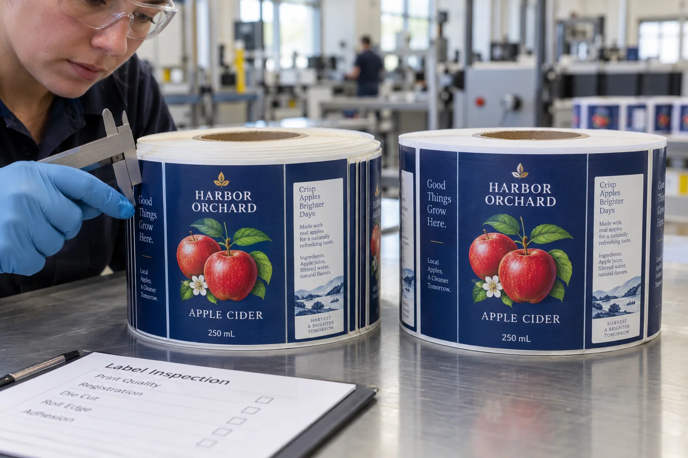

A roll matches the ordered web width on paper but its displaced layers occupy more space at the side. Calling both measurements roll width hides the distinction the equipment owner needs before deciding whether loading is appropriate.
Describe the nominal web, displaced roll envelope and core position separately. An ordered width does not approve a deformed roll for the machine.

AI-generated illustration retained on this article only. Fictional packaging, equipment and details; no measured result or actual customer/factory record.
Name the object behind each dimension
The web width describes the strip of label material and liner. The roll envelope describes the space occupied by the wound material in its present condition. Core position describes the relationship between the core and those layers. Use the terms consistently so that a supplier and operator do not discuss different objects under the same dimension.
Record photographs from both faces with orientation and roll identity. Any dimensions should be obtained only where the roll is stable and under the site's receiving procedure. Ask the supplier or responsible equipment team to assess an unstable or damaged roll rather than manipulating it to make a measurement.
| Receiving distinction | Information for the responsible reviewer |
|---|---|
| Ordered web | Specification reference and nominal width |
| Present envelope | Visible extent of displacement and how it was observed |
| Core relationship | Protruding, recessed, shifted, deformed or unresolved |
| Orientation | Which face and how the roll was packed |
| Machine question | Applicable support and clearance requirements from its owner |
| Decision | Hold, supplier assessment or an explicitly authorized evaluation |
No acceptable displacement is supplied in this card. The actual equipment, construction and commercial agreement determine what evidence is needed.
Do not infer clearance from a smaller-looking diameter
A roll may appear compact in a front photograph while extending sideways beyond its normal presentation. Conversely, a protruding core should not automatically be described as the same condition as shifted layers. Send views that show the relationship instead of a tightly cropped image of the print face.
If the supplier proposes rewinding or another rework, ask which geometry and web-quality checks the returned roll will undergo and how the new roll identity relates to the original. A changed outer appearance does not demonstrate that every affected layer or edge remains suitable.
Let the equipment owner answer the loading question
Provide the present-condition record with the ordered core, unwind and roll dimensions. The operator or equipment supplier should identify the relevant mounting and web-path limitations. Do not test clearance by forcing a suspect roll between guides or pushing layers back into alignment.
In a hypothetical hand-labeling order, the receiving decision may differ from that on an automatic line. Document the actual permitted use rather than transferring a limited hand-use acceptance to machine application. Keep affected and unaffected rolls identified in either case.
Use core and outer-diameter specifications for normal equipment format, unwind presentation for feed orientation and liner-break investigation if web damage is observed.
The edge tells you something the print face cannot
A telescoped roll has layers displaced sideways around its core. From the front, the artwork may look perfect. From the side, it resembles a stepped cone. The receiving decision is whether the actual roll can be handled and evaluated under the intended process, not whether its print still looks saleable.
Dover Flexo Electronics describes telescoping as a winding defect in which layers shift laterally, and explains why web tension matters. That is a mechanism to investigate, not proof that every displaced roll was wound badly. Handling after winding also deserves review.
Two receiving docks, two different decisions
Imagine a composite cider buyer receiving a small order for hand application. One roll has a slightly uneven edge, yet labels peel cleanly and remain protected. The buyer may ask the supplier to assess the roll and document a controlled trial. Now put the same delivery on a high-speed bottling line scheduled for the morning. A small alignment change that creates a stop can cost more than the roll. A buyer could isolate suspect rolls while checking unaffected stock.
Neither buyer benefits from a blanket rule that every uneven edge is scrap. Neither should be told to accept a roll because the print itself passed inspection. The agreed application process determines the risk.
Make a receiving record before unwinding
| Evidence | What it helps distinguish | Action |
|---|---|---|
| Unopened roll and carton photos | Arrival condition versus later handling | Include every carton side and core label |
| Core and roll edges | Core movement, stepped layers or crushed sides | Photograph both faces of several rolls |
| Lot and pallet position | Isolated damage versus shipment pattern | Keep affected and unaffected roll IDs |
| Controlled unwind trial | Appearance versus actual dispensing behavior | Record setup, speed and web tracking |
Do not push displaced layers back into place before photographing them. It destroys evidence and may hide an underlying tight or loose band. If the core is damaged or the roll is unstable, defer the trial and contact the supplier.
What to ask the converter, shipper and line team
Ask the converter for finished-roll inspection notes, winding direction, core specification and the construction supplied. Ask the warehouse about stacking, temperature and time in storage. Ask the carrier for any visible carton damage. Finally, compare a sound roll from the same lot on the intended applicator. These are parallel checks, not a search for someone to blame first.
Avery Dennison's tension-control guidance explains that too much or too little tension can produce different roll issues. A buyer could not copy a tension setting from an article into a purchase specification: the converter must set it for the actual stock, roll diameter and equipment.
A concise claim and reorder brief
- Send photos before handling the roll, with carton and roll IDs visible.
- State the applicator model, web path and the first symptom observed.
- Keep representative sound and affected rolls for comparison.
- Agree who will inspect winding, shipment and storage evidence.
- Confirm replacement roll dimensions and packaging before dispatch.
If the trouble is at a join rather than the roll body, see our roll splice acceptance guide. If the roll is sound but the web breaks during application, start with die-cut and liner damage.
Send the relevant project details
Discuss the uneven-roll condition with both-face photographs, roll ID, ordered dimensions, core condition and the equipment owner's requirements. The form opens an email draft; use listed email or WhatsApp for files. Rework, loading and acceptance must be agreed rather than inferred from a photograph.